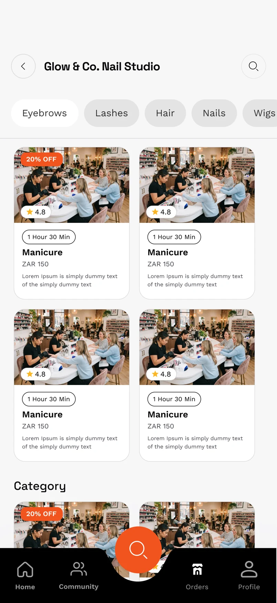
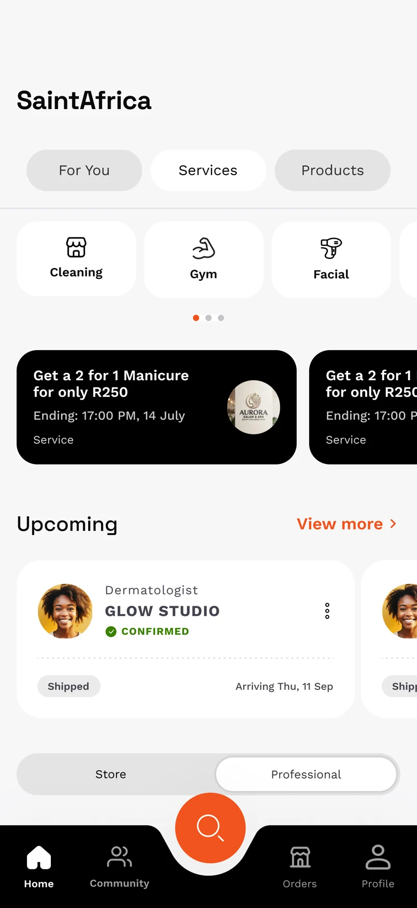
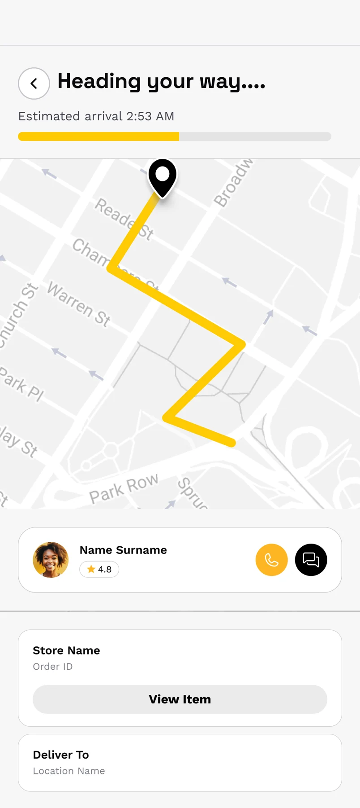

THE LOCAL SHOPPING EDITSmall businesses.
Small businesses.
Big discoveries.
Explore local storefronts, browse what’s on offer and keep the businesses you love close.

YOUR NEIGHBOURHOOD. REIMAGINED.
The best of local, all in one place. Discover the businesses around you, book your next appointment, and feel more connected to where you live.
3 months free · R0 setup · ±5% when you sell


ONE PLACE. SO MUCH POSSIBILITY.
One residential complex. One concentrated customer base. Reach people who live in the same area, close to one another and close to your business.
*Resident figure is an estimate based on the estate’s 1,040 apartments; actual occupancy may vary.
01 / MEET YOUR EVERYDAY APP
Your next favourite spot might be a short walk away. SaintMarket brings the shops, services and people around you into one simple experience.
From a fresh set of nails to your next gym session, find businesses nearby. Explore the map, browse categories and get a feel for a place before you go.

A look inside the SaintMarket product design.
02 / LITTLE THINGS. BETTER DAYS.
From your first browse to your next booking.
Every part of your day, a little closer.
Explore local storefronts, browse what’s on offer and keep the businesses you love close.

Choose your professional, find a time that works and make your next appointment happen.


Check your order status, follow its progress and find everything you need in one place.

Discover your community, join conversations and connect over the things you have in common.

03 / BUILT FOR YOUR BUSINESS, TOO
Put your business in front of a concentrated residential community. From first discovery to the next booking, give nearby customers a reason to return.
Become a founding businessProducts, services and your business profile, together in one place.
Accept digital orders and keep track of what needs your attention.
Make your availability easy for nearby customers to book.
Offer recurring services and memberships to customers who live nearby.
Be discovered by the people already living around your business.
Understand orders, activity and what your customers respond to.
04 / THE FOUNDING BUSINESS INVITATION
Join the Amsterdam Lifestyle Estate pilot.
Help shape the future of your local marketplace.
R0 setup and R0 monthly subscription during your first three months.
During the pilot, pay around 5% only when a transaction happens.
Approximately R199/month + 5%, communicated upfront and protected for 12 months.
YOUR COMMUNITY. YOUR MARKETPLACE.